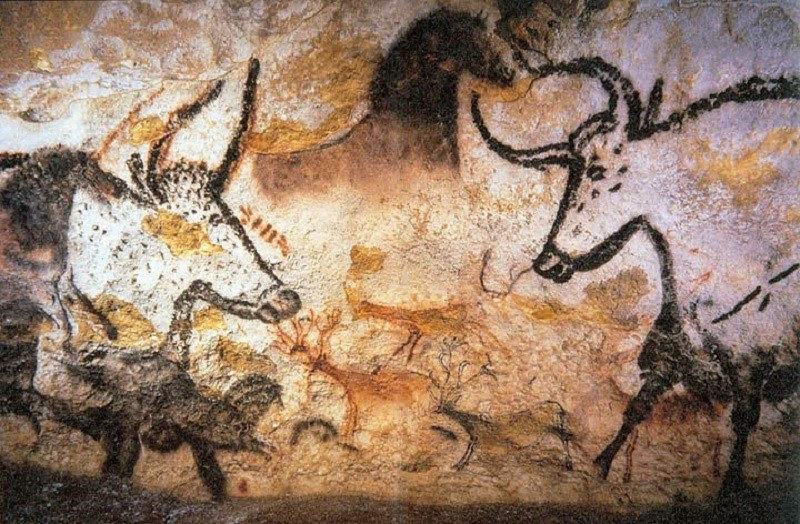
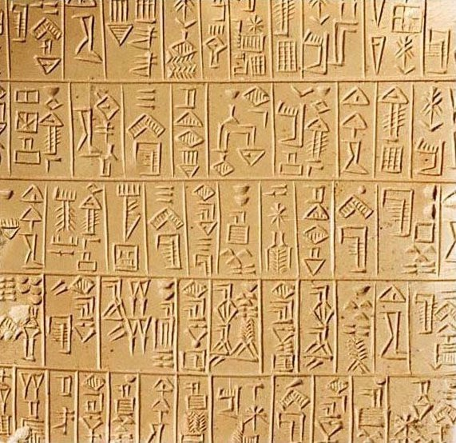

From The Beginning
Historians trace the origins of graphic design to early cave paintings from about 38,000 BC. These early forms of cave paintings were how people communicated from one generation to another. Subjects in these cave paintings mainly featured animals, handprints, weapons, and other references to hunting. While it is unclear what humans were communicating, it is obvious they were communicating visually.
Frist HyroGlyths
The next evolution of graphic design is language itself and the visual representation with the alphabet. The Sumerians are credited for the invention of writing c. 3300 to 3000 BC. These early forms of writing were pictographs, symbols that represented objects. You can already start to see the early forms of graphic design at play.
